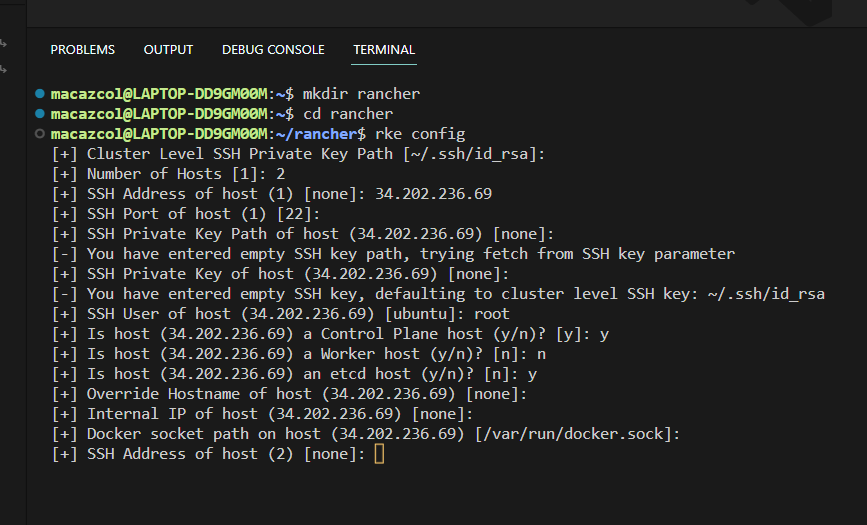
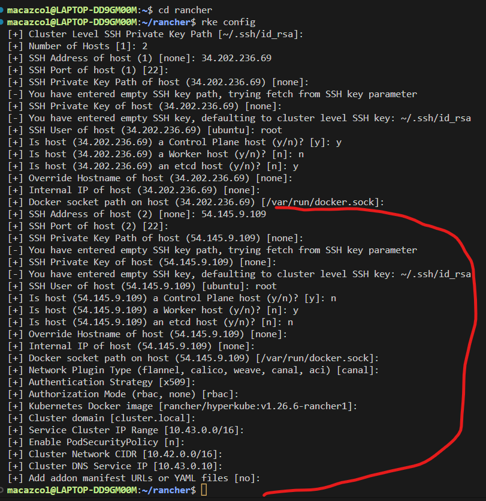

Rancher
See link: Releases: See link: RKE Kubernetes Installation:
Install Binaries
- I'm using WSL Ubuntu=20.04.3 LTS
- Install binaries
- I installed: rke_linux-arm64
Install
- Move the rke_linux-arm64 download from local to WSL and convert
mv rke_linux-arm64 rke
chmod +x rke
get rke version
./rke --version
get rke version from anywhere
sudo mv rke /usr/sbin/
rke vaerion
Create Hosts in Any environment
- I created 2 ubuntu instances in AWS as my hosts
- get their public IPS
- Install Docker on both hosts
- Make sure both Hosts have ssh access
You can also get your host info by running command
hostname -I
# Get system version
cat /etc/os-release # Debian/Ubuntu
you can install docker on ubuntu with this command
curl https //releases.rancher.com/install-docker/20.10.sh | sh
[ 34.202.236.69 # Master 54.145.9.109 # Slave ]
change to root and run commands
sudo su -
mkdir rancher
cd rancher
create the rancher config using the prompt
rke config

And for second server config, continue with prompt

now a cluster.yaml file has created, Run it
rke up